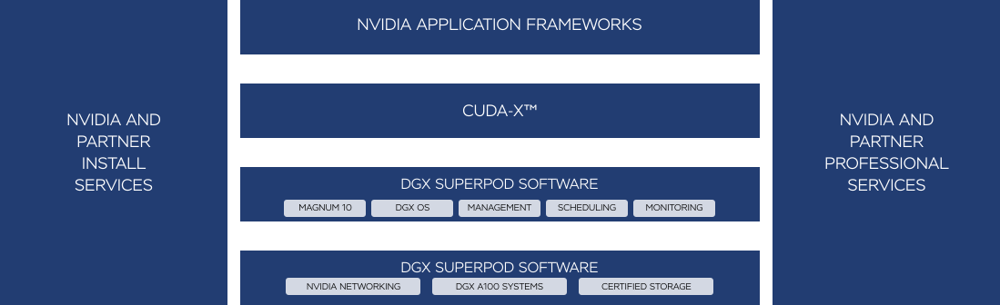

ПЕРЕДОВАЯ ИНФРАСТРУКТУРА ИИ
Количество компаний, использующих ИИ, растет в геометрической прогрессии. Компании, стремящиеся повысить уровень обслуживания клиентов, оптимизировать работу, улучшить качество лечения или расширить возможности для исследований, инвестируют в инфраструктуру ИИ, чтобы получать результаты быстрее. Корпоративная система NVIDIA DGX SuperPOD™ предназначена для компаний, ищущих кратчайший путь к внедрению инновационных технологий ИИ. Модуль представляет собой готовое программно-аппаратное решение и комплекс услуг, которые избавляют от экспериментов при разработке и развертывании инфраструктуры ИИ.
КОМПЛЕКСНОЕ РЕШЕНИЕ ДЛЯ КОМПАНИЙ
NVIDIA DGX SuperPOD для предприятий сочетает в себе лучшие практики и технологии развертывания крупнейших в мире систем ИИ, призванных решать самые сложные задачи, с которыми сталкиваются компании. Специально для компаний, которым требуются готовые и проверенные инфраструктуры ИИ, мы разработали программно-аппаратный модуль с комплексом услуг на основе нашей референсной архитектуры. Модуль NVIDIA DGX SuperPOD для предприятий предоставляет комплекс услуг, которые позволяют каждой компании развернуть готовую передовую инфраструктуру ИИ за несколько недель, а не месяцев. Это достигается благодаря адаптации и простой интеллектуальной интеграции системы для вашего бизнеса, что позволяет быстрее начать работу и получить результаты.

Быстрое развертывание супервычислительных решений
В основе DGX SuperPOD для предприятий лежит референсная архитектура DGX SuperPOD — самая быстрая доступная на рынке инфраструктура ИИ, установившая рекорды в бенчмарках MLPerf. С DGX SuperPOD компании могут получить собственную передовую инфраструктуру ИИ при поддержке NVIDIA и быстро развернуть ее, что позволяет специалистам по data science начать работу с первого дня.
Индивидуальный подход и полная интеграция
Специалистам по data science требуются инструменты, платформа и инфраструктура для ускорения работы с ИИ и более быстрого получения результатов. А ИТ-специалистам нужен опытный партнер для интеграции инфраструктуры ИИ в существующую среду. С DGX SuperPOD для предприятий наши эксперты помогут интегрировать проверенную инфраструктуру в вашу среду, предлагая специально подобранные для вашей компании гибкие варианты развертывания.
Полный комплекс услуг
Компаниям важно не просто построить референсную архитектуру, но и как можно быстрее обеспечить ее работу для целей бизнеса. DGX SuperPOD для предприятий предлагает полный комплекс услуг для планирования дата-центра и опыт при развертывании инфраструктуры, что позволяет ускорить настройку, установку, обучение и дальнейшие оптимизации при технической поддержке NVIDIA.
Экскурсия по дата-центру NVIDIA
Посмотрите обзор дата-центра NVIDIA, созданного по тому же шаблону, что и в референсной архитектуре DGX SuperPOD. Суперкомпьютер Selene занимает высокое место в рейтинге супервычислительных систем TOP500 и списке Green500 благодаря рекордам в отраслевых бенчмарках MLPerf для ИИ.
Постоянное лидерство в области ИИ
Узнайте, почему многие передовые проекты с ИИ — от лидеров рейтингов супервычислительных систем до решений, превосходящих другие инфраструктуры ИИ в бенчмарках MLPerf, — созданы на базе систем NVIDIA DGX™.